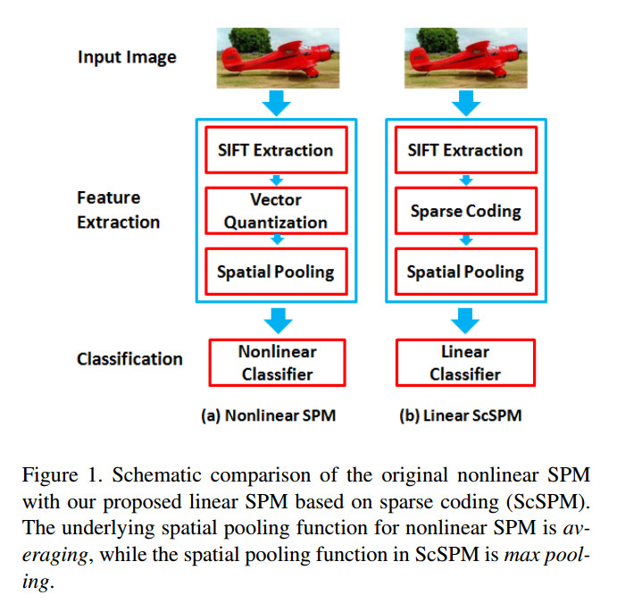

BOW-词袋模型
BoF（bag of feature）
词袋模型是从文本识别中借鉴到视觉中的方法。这种方法对文本建模时不考虑整体的结构，只是简单的根据单词出现的规律来判断文件类型。比如一共有m篇文章，每一篇有一个类别，像是新闻、娱乐或体育等。统计出现在这些文章中的所有词，把这些词作为一个字典，这里假设一共出现过n个词。之后统计每一篇文章的词的个数，每一篇文章可以构成一个n维向量。这样，一共有m个n维向量，并且有m个对应每一个向量的label。在得到m个向量后就可以构造分类器，并使用这个分类器来对新的文章生成的向量进行预测。对于新的要求分类的文章，我们做同样的操作，统计它在字典中每个词的个数，所有也构成n维向量用来预测。
视觉中使用的词袋模型和这个非常相似。首先是如何构造词典。可以用特征描述子来作为单词，像使用SIFT特征，但是这样空间太大，需要采用聚类的方法的到k个聚类，聚类方法会返回每一个类的中心点。每一个聚类作为一个“单词”，因此我们一共的到k个单词构成的字典。对于每一张图片可以的到一个k维的向量，具体过程是：计算图片的所有特征描述子，每一个描述子归于与之最近的一个类，这样k维向量的每一分量值代表图片在这个类中有描述子的个数。这样我们就将每一张图片建模为一个k维的向量。可以用l张训练照片得到l个k维向量，并且每一张照片有一个label，因此有l个label。使用这些数据进行训练，得到一个分类器。测试数据也计算出这样的一个k维向量，然后使用得到的分类器进行分类。
在构建这个模型中使用的工具有：k-means聚类算法、SIFT（或其他的生成描述子的算法如SURF）、SVM（或其他分类方法如knn）。
对这种方法还有许多改进和提升的方法，比如采用金字塔等。
可以参考wiki 和后面的的References。
在实现词袋模型时有几点需要注意：
- 像CIFAR-10这样的数据集，图片非常小，因此提取的特征非常少，结果也比较差。还有一点就是整个图片都是物体本身，所有可以采用将图片分割或多少步求一个特征，这样会得到很多的特征。可以使用vlsift。
- 在用kmeans时必须自己决定聚类的个数，这是一个需要调的参数。或者采用可以自己决定聚类个数的其他kmeans算法。
- 分类器：knn效果不好，可能需要多分类的SVM。
参考论文：Visual Caegorization with Bags of Keypoints. G.Csurka,C. R. Dance,L. Fan,J. Willamowski,C. Bray.
SPM（spatial pyramid matching）
SPM算法是建立在词袋模型上的。首先词袋模型由于是整个图片的直方图，因此它丢失了局部的信息，因此SPM是建立金子塔将局部信息也编码进去。这里的金子塔不是降采样的金字塔，而是将图片分割。比如最底层是将图片分割层16份，上一层是分成4份，最上层是整张图片。对每一个小块都求自己块内的直方图，并按一定比例的加权构成一个大的向量作为描述向量。然后就是分类，这里采用的是金字塔匹配的特殊的方法，它是计算一个非线性的核用于SVM分类。这样做的目的是适应金字塔的结构，能得到比较好的结果。
例如：一张640×480的图片，采用16×16的块求SIFT特征，并且移动的步数是8个像素，一张图片要生成 \(M=(640-8)/8+(480-8)/8)\) 个128维的特征向量。将训练图片得到的所有特征向量用k-means聚类得到dictionary，假设有N个word。描述向量是从金字塔底层到高层，每一层的每一块都生成一个N维的向量，比如一共3层的话，最底层有16块，一共生成16×N长的向量，最后组成 \((16+4+1)*N\) 长的一幅图的描述向量。这样每一幅图都生成这样一个描述向量。之后是计算交叉核用于分类，而测试的图片也要和所有的原图向量计算分类的核。最后使用得到的交叉核来用SVM进行分类。
参考论文：Beyond Bags of Features:Spatial Pyramid Matching for Recognizing Natural Scene Categories. Svetlana Lazebnik, Cordelia Schmid, Jean Ponce.
ScSPM（Sparse Coding Spatial Pyramid Matching）
ScSPM是对SPM的一种改进，SPM的计算量非常大，因为都要计算交叉核。ScSPM是采用另一种方法编码，可以使用线性核得到很好的结果。
ScSPM是采用稀疏的编码方式。这和SPM采用的硬编码不一样，它是一种“软”编码，就像它可以通过不同的权重投票一样。因此它也不是采用k-means算法，而是另一个最小化函数（见论文）。接下来是pooling的过程，即将k个N维的软编码向量融合成一个N维的向量。这里采用的是最大值pooling，即向量某一位的值是k个向量对应位的值中最大的。而SPM或词袋模型中是是采用的统计平均值。这样像SPM中一样金字塔的向量拉成一个大的向量就是描述向量，并且采用线性核（论文）进行分类，这样训练和分类的效率非常高。
下图是SPM与ScSPM的区别： 
参考论文：Linear Spatial Pyramid Matching Using Sparse Coding for Image Classification. Jianchao Yang,Kai Yu,Yihong Gong,Thomas Huang. 这篇论文的几个公式非常重要，对整个过程讲的也很清楚。
总结
这里是词袋模型发展过程中比较重要的几个工作，从没有局部信息的BoF到采用金子塔并使用金字塔匹配核来实现的SPM，再到ScSPM使用稀疏编码和最大值pooling，并使用线性SVM，整个过程都是围绕直方图展开。只是具体的操作比如如何生成字典，如何匹配等不一样。需要理清整个发展的方向。
Back to Homepage
Github